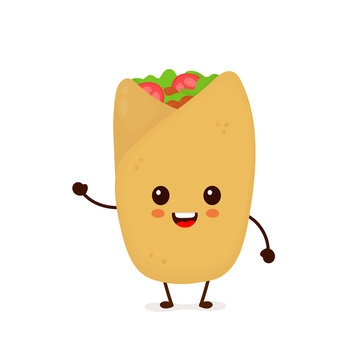

HOW TO MAKE BURRITOS

This is a Burrito, it's very delish
This food was invented to help you speak spanish
Ingredients
- Beef/Ground chicken
- Taco seasoning, chopped onions, garlic powder, beef broth
- Black beans
- Tortillas
- Cheese preferably mexican blend shredded cheese
- Fillings - Chopped tomatoes, lettuce guacamole etc
How to wrap all those ingredients together... Literally
- Brown the beef with taco seasoning, chopped onion and garlic powder
in a large skillet. Cook and crumble until it ain't pink. Add beef broth and beans
and sprinkle shredded cheese to allow it to melt.
- Once ground beef is prepared and the fillings are in place.
lay the tortilla on a flat surface anddivide the rice, beef mixture
tomatoes guacamole, cheese and others.
- Use skillet to heat up tortilla
- Add rice to tortilla
- Add warm ingredients - beef mixture
- Add cold ingredients tomatoes guacamole cheese etc last
- Roll the bottom half of the burrito over the top half, fold one end in and the other end
and with both ends folded ,tightly roll tortilla until you have a burrito!
Return to homepage